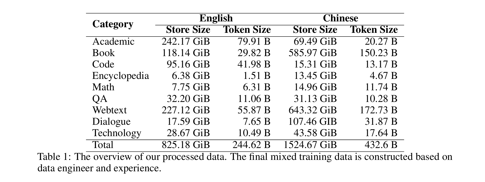
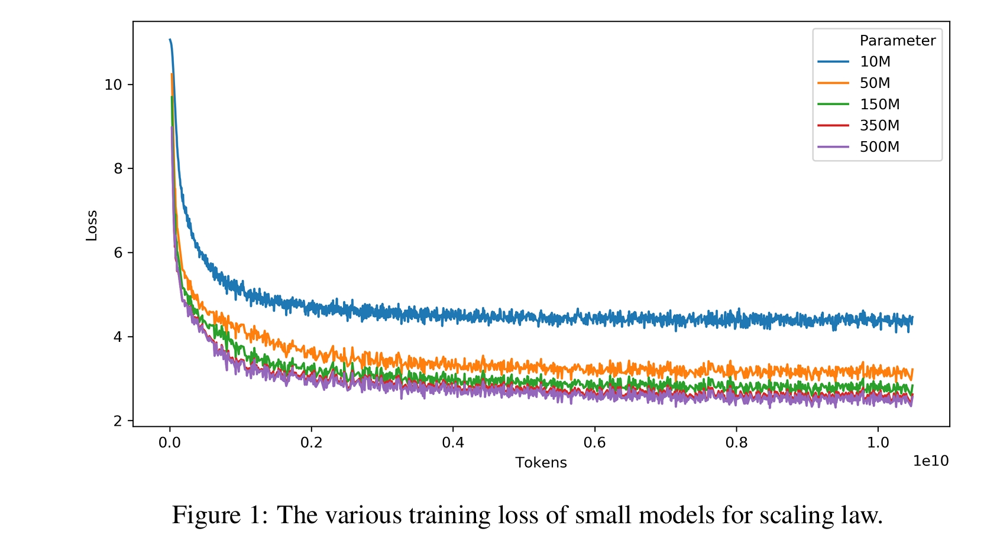
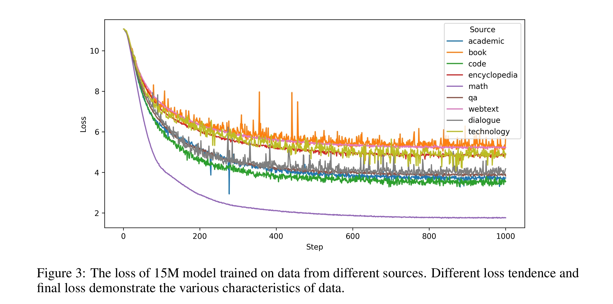
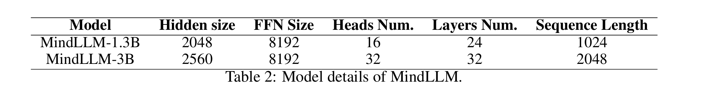
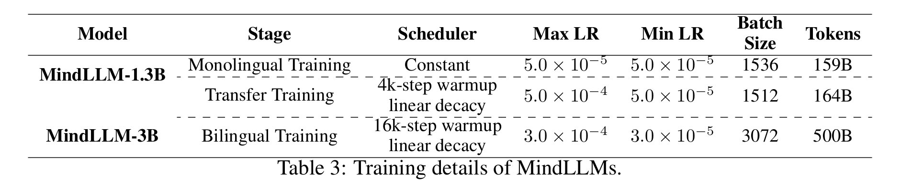
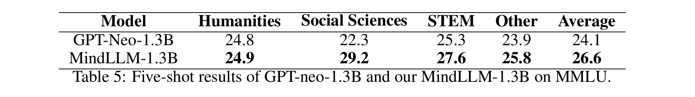

明德大模型(MindLLM)
MindLLM 1.3B is a Transformer model with 1.3 billion parameters by Beijing Engineering Research Center of High Volume Language Information Processing and Cloud Computing Applications & Beijing Institute of Technology Southeast Academy of Information Technology.
We present a series of lightweight bilingual large language models, MingDe LLM, short for MindLLM. MindLLM has two separate models, MindLLM-1.3B with 1.3 billion parameters and MindLLM-3B with 3.1 billion parameters. The MindLLM-1.3B is trained on 323 billion tokens while the MindLLM-3B is trained on 500 billion tokens in a mixture of bilingual data. Considering the scalability, learning capacity, and training costs of the model, we have adopted a series of optimization operators such as RoPEand FlashAttention-2. We pre-train our models in two distinct training strategies:
(1) training on binlingual mixture data and (2) training on monolingual data then transfer. Our experiments show that although training on new language data after monolingual pre-training can implement language transferring and improve capability by language alignment, training from scratch with bilingual data is a better way for capability learning and avoiding catastrophic forgetting.
The highlights of our model can be summarized as follows:
-
This study presents MindLLM, a novel bilingual lightweight large language model trained from scratch. Diverse bilingual training data is collected and used for pre-training, guided by preliminary experiments on data. Our experience with data handling is also shared, which includes maintaining a high-quality and high-proportion of webtext, retaining long-term data like books and dialogues, downsampling math data while upsampling code data. Based on our experiment concerning data curricula, we recommend evenly shuffling data for capability learning but chunking some samples for few-shot learning scenarios.
-
Our evaluation results show that MindLLMs outperform larger models like MPT-7B and GPT-J-6B on MMLU and AGIEval. As for Chinese general capabilities, MindLLMs exhibit comparable performance to larger counterparts on C-Eval and CMMLU. Specifically, MindLLM-3B outperforms larger models such as MOSS-Base-16B, MPT-7B in mathematical abilities and surpasses Baichuan2-7B and MOSS-Base-16B in bilingual capability. Moreover, MindLLM-1.3B is better than the equally sized GPT-Neo-1.3B in mathematics.
-
Weconducted experiments to compare two distinct training strategies in bilingual learning and investigate the impact of whether maintaining a uniform distribution of data during pre-training. Combined with other counterparts’ evaluation results, we conclude that it is suboptimal for lightweight models (≤ 7B) with constrained capacity scale to achieve complex capabilities such as mathematics, reasoning, or bilingual alignment through pretraining then transfer-training strategy, as integrating new and existing knowledge proves difficult. In contrast, a more efficacious strategy involves the strategic integration of diverse data types aligned with the requirements of downstream tasks from scratch, thereby ensuring the stable and effective acquisition of the desired capabilities.
-
Wefindthat lightweight models face a big challenge in augmenting their general capabilities with diverse instruction tuning data. Leveraging tailored data for a particular ability during instruction tuning can significantly enhance the specific ability (such as integrated reasoning ability or subject-knowledge ability) of lightweight models.
-
We introduce the approach to construct an instruction set using an entropy-based quality f iltering strategy and demonstrate its effectiveness in filtering high-quality instruction tuning data for lightweight models. We prove that, in the context of lightweight models, the optimization of model performance is more proficiently realized through the amelioration of instruction tuning data quality, as opposed to mere augmentation in data quantity.
-
Our models showcase outstanding performance in specific domains, particularly in areas like law and finance. We find that the difference in model parameter sizes does not yield significant distinctions within specific domains, and smaller models can outperform their larger counterparts. Our models outperform all models with parameter sizes ranging from 1.3B to 3B in specific domains while remaining competitive with models having parameter sizes from 6B to 13B. The model’s classification ability within specific domains shows a noticeable enhancement under the COT method.

Data
Enlish pre-training Dataset
We utilize the Pile as our primary source for English pre-training datasets. ThePile, an 800GB dataset derived from 22 diverse sources including web scrapes, academic resourcesbooks, and more, closely mirrors the data sources used in larger non-open source models likePaLM, and GPT-3. Following previous works and our preliminary experiments, we increase the weights of higher-quality compositions and important categories by up-sampling.
Chinese pre-trainging Dataset
Our Chinese pre-training dataset amalgamates contributions from WuDa Cook and open-source data from various Chinese websites.
WuDao is culled from 3 billion web pages with high text density. We employ a set of cleaningprocesses to enhance the quality of the corpus and flter sensitive and personal information. Althoughthe original WuDao corpus is vast (3TB), we only utilize its open version due to its close-sourcenature. The version used approximates 200GB of training data, encompassing multiple domains likewiki, news, and comments. CBook, a large-scale Chinese book corpora collected through open-source MD5 book links byFudanNLPLAB, forms an integral part of our training dataset. Recognizing the value of books forlong-range context modeling and coherent storytelling, we parse and extract text content from thecorpus in various formats such as pdf, mobi, and epub totaling over 100 thousand books.
Empirical Observations on Data Engineer
To ensure optimal performance in the face of inreasing training costs for deep learning and largelanguage models, we investigate the relationship between data volume and model capacity, specifcallythe neural scaling laws. These laws depict error reluction as a power function of training data volume.model capacity, or both. Before embarking on thetraining of large language models with billions ofparameters, we initially train smaller models to establish a scaling law for training larger ones. Weemploy model sizes spanning from 10 million t500 million parameters, with each model beingtrained on up to 10 billion tokens. This training uilizes consistent hyperparameters and the identicaloss of various models, we can establish a mappingdataset mentioned earlier. By analyzing the final loss of various models, we can establish a mapping from training FLOPs to the target loss. As shown in Figure 1, models of different sizes are saturated with different amounts of training data, and the required training data increases with the increase of model size. To conform to the precise data requirement of target model, we utilize the formula provided by Henighan et al. [2020] as follows to fit the model’s scaling law.

The Influence from Data on Model Capability
We downsize the data from each source maintaining the relative proportions and train smaller modelswith 15 million parameters using a single data source. We maintain a consistent number of tokensfor model training instead of one-epoch training, as obtaining data from some sources is unfeasibleduring scaling. As depicted in Figure 3, different types of data have varying impacts on learningeffciency and the model’s final outcomes. For instance, the final loss of math data is much lower with more rapid learning speed, indicating it exhibits a more conspicuous pattern and is easy to learn.In contrast, data from information-rich books or diverse webtext requires slower adaptation. Somedomain-similar data may be closed in loss, such as Technology and Encyclopedia.

Our Model
In this section, we propose a series of lightweight language models MindLLM, a custom designthat amalgamates various beneficial technologies and modules to ensure stable training and optimaperformance.

MindLLM-3B
MindLLM-3B is a transformer-based language model with 3.1 billion parameters, incorporating several key improvements:
-
Embedding: The model uses rotary positional embeddings (RoPE) instead of traditional absolute positional embeddings, enhancing flexibility in handling variable sequence lengths and improving attention across token positions.
-
Normalization: Instead of LayerNorm, the model uses Root Mean Square Layer Normalization (RMS Norm), which offers similar performance with reduced computation time. It also applies DeepNorm to stabilize the residual connection during training.
-
Attention: The model optimizes the causal multi-head attention mechanism with FlashAttention-2, improving memory efficiency and computation speed by parallelizing attention across threads.
-
Feedforward Layer: The standard GelU activation is replaced with GeGLU activation in the feed-forward sublayers, enhancing performance while maintaining the parameter size of the original layer.
MindLLM-3B is trained on over 500 billion tokens using Byte Pair Encoding (BPE) from SentencePiece, with a final vocabulary size of 125,700.
MindLLM-1.3B
MindLLM-1.3B is based on the GPT-2 architecture with decoder-only transformers and follows the design principles of OpenAI’s GPT model. Key modifications include local-attention, pre-normalization, final normalization, and the use of the Hendrycks-GeLU non-linear activation function. To better recognize Chinese scripts, the model extends existing open-source LLMs (e.g., Llama, Alpaca) by adding Chinese tokens to the tokenizer and word embeddings. A Chinese tokenizer is trained using the Wudao corpus and integrated into the original LLM tokenizer. The word embeddings matrix is expanded by resizing the vocabulary to accommodate additional Chinese tokens.

